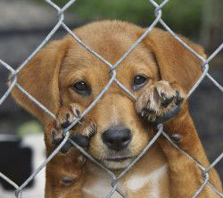

Barkley is one of my best friends. He is a seven year old Husky-Shepherd mix. My mom found him sitting at our front door one morning. He was abandoned in the neighborhood and we adopted him. He was only a year old when we found him. Mom calls him a big teddy bear because he weighs almost 100 lbs and is very lovable.
Gabby is another one of my best friends. She is a one year old Belgian Malinois. She is full of energy and loves to run and play with her ball. We adopted her when she was only four months old. Being a puppy she would love to chew on my mom's throw rugs, which would make my mom very upset. But we love her anyway.
Mojo was my first dog and she is my little baby. She is a 14 year old Jack Russell Terrier with big brown eyes. She likes to hangout in the backyard of my dad's house and wait for the raccoons and possums to come out so she can chase them.
Barkley and Gabby live at my mom's house and they love to chase squirrels.
Each dog has different nutritonal needs, so we feed them the three different types of dog food listed below to ensure they stay healthy. In addition,the recomended daily allowance varies by weight according to the table provided by the manufactuer.Click here for serving size by weight.
They have brought my family alot of joy and I love them all very much. If you have love to give and would like to experience the joy that I have from my best friends, visit your local shelter. In San Antonio visit Animal Defense Leauge of Texas
Click below to adopt a virtual dog!
